CS194 Project 5: Face Morphing
Rohan Chitnis
(Skip to bells and whistles section.)
Background
For this project, we used triangulation and affine transformations to create warps between images. Basically, the algorithm I employed is as follows. First, select control points for each image, and determine a Delaunay triangulation based on the average of these points. Currently, my code requires the user to enter 30 control points per image. Then, linearly interpolate these two sets of control points according to some parameter, which we call warp_frac, and compute the affine transformations between the triangles (from the triangulation) of these interpolated points to the triangles of each original image's control points. Next, loop through the pixels of the output image and, for each one, determine which triangle it's in, and left-multiply the matrix transforming this (i, j) pixel to the first image and to the second image. Finally, blend the corresponding pixel in each of these images according to some other parameter, which we call dissolve_frac.
Basic Morphing
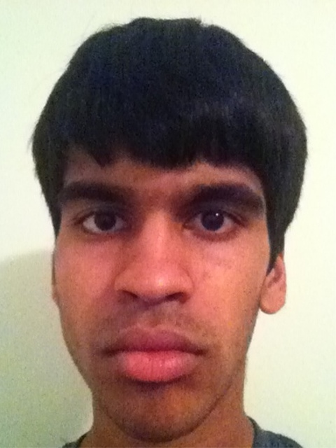
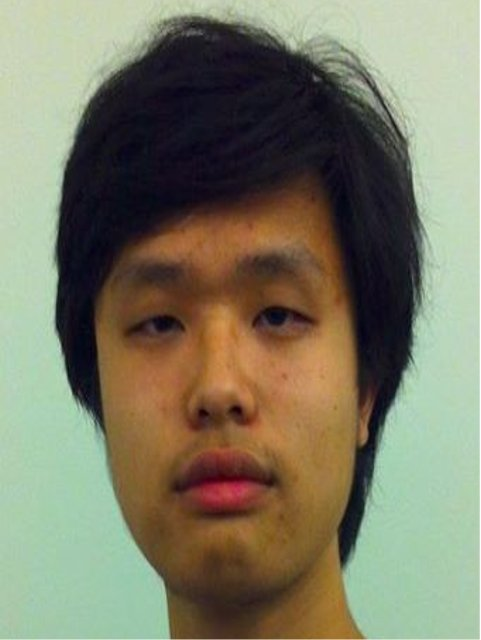
Left: The running image of me which I use for all demonstrations.
Right: The image of my handsome Chinese friend, Alex Chu (his project can be found here).
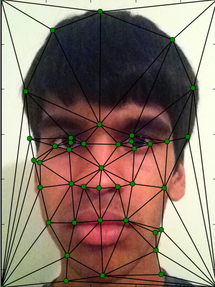
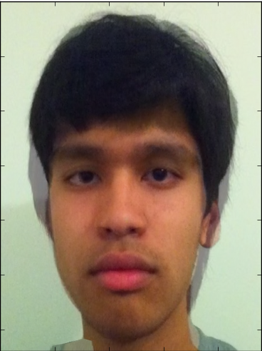
Left: Visualization of an example of Delaunay triangulation on control points on my face. These control points roughly represent the template I used for most of my images, with minor variations. An interesting point here is that I add the corners of the image before computing any triangulation, to ensure that all points in the output image will be contained in some triangle.
Right: The midway morph from my face to Alex's. This was simply obtained by utilizing the exact algorithm described in the background section, with warp_frac = dissolve_frac = 0.5. Notice that in this image, although it seems to have mostly my facial features and structure, my skin tone is lighter to match his and my eyes and nose have slightly shrunk.
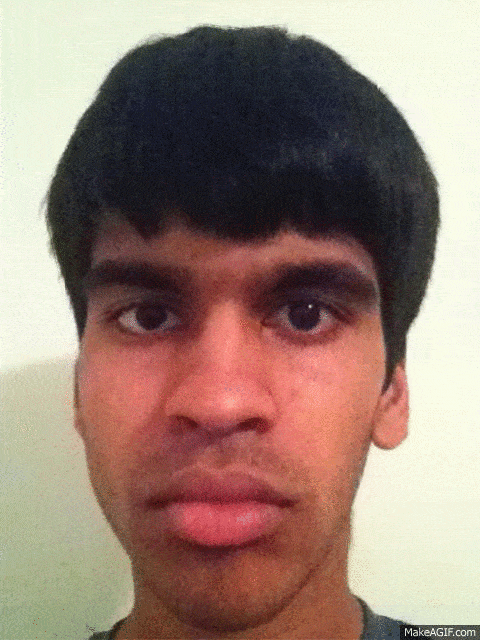
Finally, a full morph from my face to Alex's! This was obtained by incrementing warp_frac and dissolve_frac together linearly from 0.0 to 1.0 with 45 steps, then putting the resulting images together into a gif. This morphing is very smooth and there is no noticeable distortion! Recall again that the Delaunay triangulation is computed once at the very beginning based on the average of the control points.
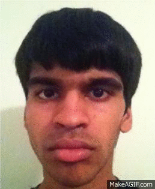
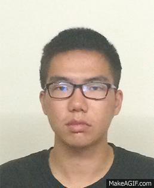
Just some more awesome examples of morphing, explained later but frontloaded here for viewing pleasure! These were all obtained in the same way as before.
Mean Face of a Population
For this part, I found the mean face of a population using a generalized version of the basic two-image algorithm. I used the small Danes annotated dataset, which contains ~40 images of people's faces, and I computed the average shape of all the control points. Then, for each image in the dataset, I morphed it to the average shape using the standard morph algorithm with warp_frac = 1 and dissolve_frac = 0 (this morphs only the shape, but not the appearance/color of each face). I then averaged together all the resulting morphed images to obtain the population mean face.
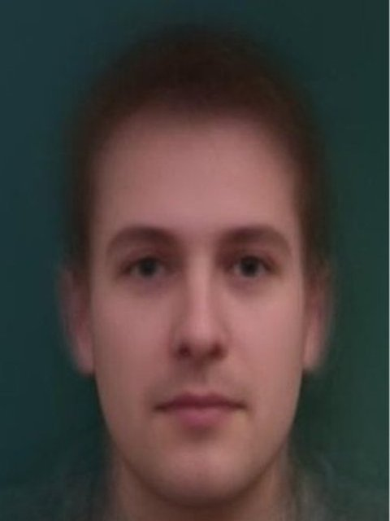
Here's the average face that I got! It's interesting how this face looks attractive even though it is the average of people of different genders and facial structures, which suggests that we as humans find the low frequencies in people's faces (which are preserved by the averaging operation) generally attractive, and the high frequencies which make our faces distinct are what truly determine how we judge attractiveness.
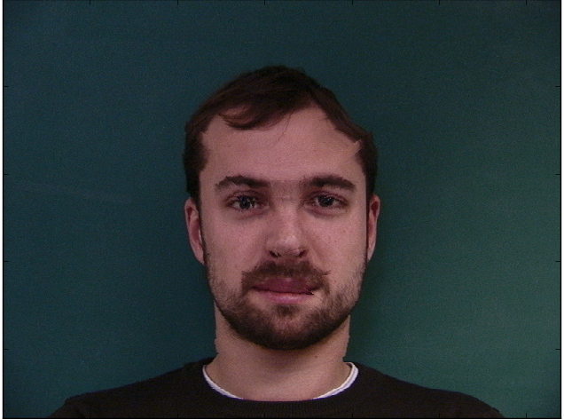
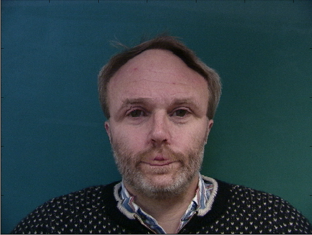
Here are some examples of faces in the dataset being morphed into the average shape (as part of the process toward obtaining the above average face image), using warp_frac = 1 and dissolve_frac = 0! The slight distortion and cracking is expected due to the triangulation, since we are not blending colors here.
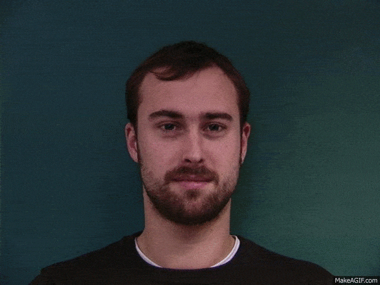
I know it wasn't required, but I tried morphing some images in the dataset into each other to see how good the annotated control points are. The results were great so I wanted to share one!
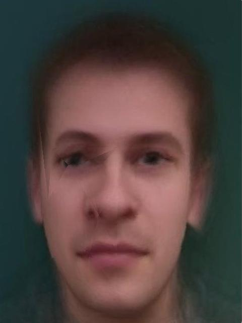
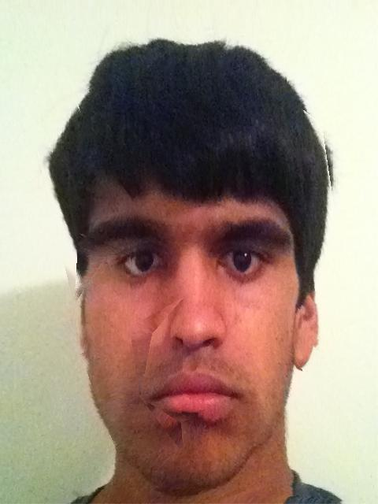
And here is the result of my own face warped to the average face's shape, and vice versa, just like I did with each image in the dataset! As before, some distortion and cracking is expected due to the triangulation, since we are not blending colors here. Notice that in the left image, the average face begins to develop my facial structure, such as lips and nose size, while the opposite effect occurs in the right image, as expected.
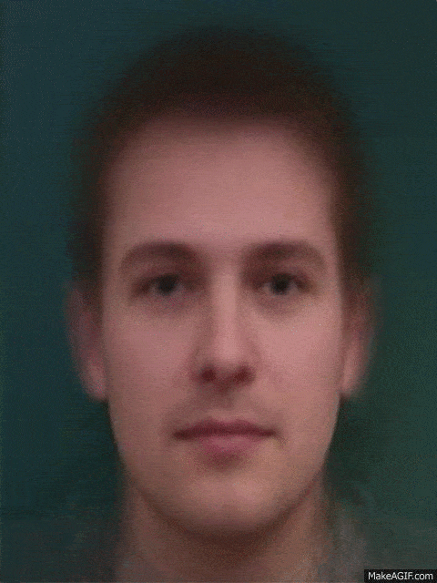
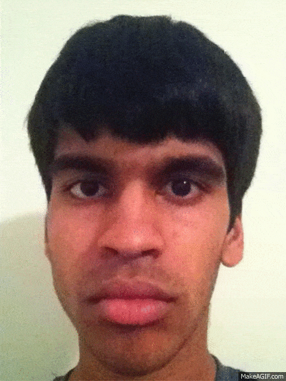
For fun, here are the morphs between my face and the average face!
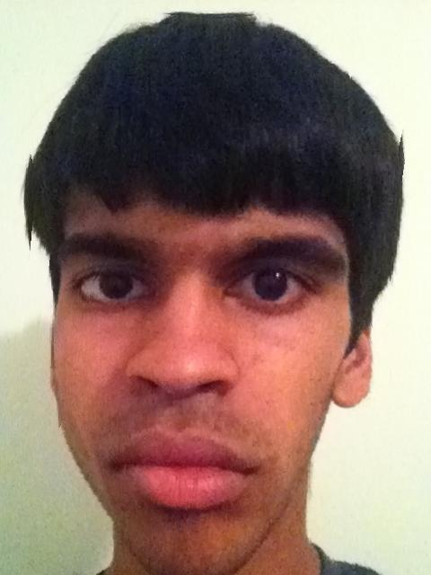
I produced a caricature of my face by morphing my face to the average face's shape as before, but changing the control points of the average face to add 1.65 times the difference between the two images' control points. This functions to effectively extrapolate from the image of the average face. Notice how in this image, my eyes and other facial features are exaggerated, and my jawline is slightly warped. Increasing this multiplier above 1.65 generated distortion that detracted from the quality of the image.
No morphing image is complete without its corresponding video!
Bells and Whistles
1. Changed my age, gender, and ethnicity to those of the average English woman.
I found the average face of an English woman and morphed my shape, appearance, and both into it. Here are videos of the result in each case!
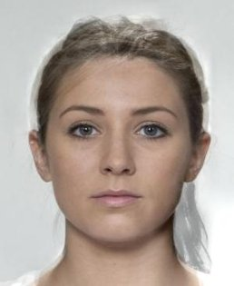
The original images. Source for average face image: http://www.faceresearch.org/
Left: Morphing just the shape. Warp_frac = 1, dissolve_frac = 0.
Middle: Morphing just the appearance. Warp_frac = 0, dissolve_frac = 1, so no warping or transformations are happening here, just color blending.
Right: The final result morphing both. Notice how combining these two processes eliminates all residual cracking effects from the triangulation, because we are now blending color along with the shape.
2. Morphing music video of myself at different ages.
Check out this music video showcasing my aging thus far from being a baby, to being a young child, to being my current age, to being a famous handsome Indian Bollywood actor in the future (Shah Rukh Khan), to being Gandhi when I'm old! Made with Youtube Video Editor since I'm not pro enough to know how to use real video editing software.
Music Video!
3. Class-wide morphing chain!
I participated in this chain, morphing Shuai's face to my own! Here are the original images and results. Again, no deformation and the results are quite seamless and aesthetically pleasing!
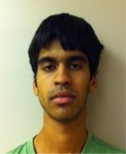
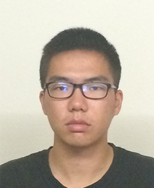